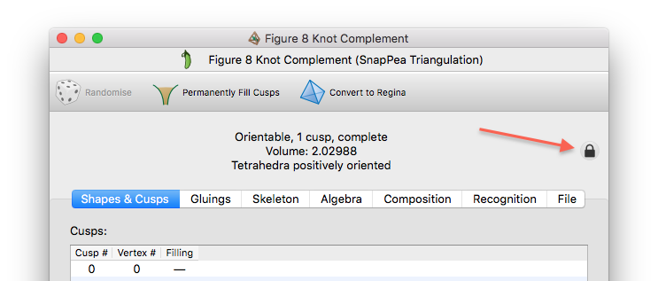
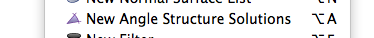
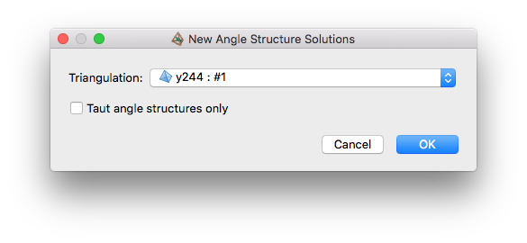

Enumerating Angle Structures | |
| Prev | Angle Structures | Next |
Angle structures are stored in lists, which typically hold all vertex angle structures on a particular 3-manifold triangulation. Here vertex angle structures correspond to the vertices of the solution polytope for the equations and inequalities described earlier. This means that every possible angle structure on the triangulation can be expressed as a convex combination of the vertex angle strutures.
As with normal surfaces, Regina insists on keeping angle structure lists tied to their corresponding triangulations (this is because angle structures are expressed using coordinates relative to these triangulations). An angle structure list always lives immediately beneath the corresponding triangulation in the packet tree, and Regina will not let you modify the triangulation as long as it has any angle structure or normal surface lists beneath it. The triangulation will be marked with a small padlock to remind you of this.

To create a new angle structure list, select → from the menu (or press the corresponding toolbar button).

A new packet window will appear, asking for some additional details:

- Triangulation
This is the triangulation that will contain your angle structures. You may chose either one of Regina's native triangulation packets or one of its hybrid SnapPea triangulation packets. The new angle structure list will appear as a child of this triangulation in the packet tree.
- Taut angle structures only
If unchecked (the default), Regina will enumerate all vertex angle structures.
If checked, Regina will only enumerate taut angle structures. These are angle strutures in which every angle is either 0 or π. There are only ever finitely many taut structures (possibly none at all), and if you check this box then Regina will enumerate them all. This is generally much faster than enumerating all vertex angle structures.
Note that we use the Kang-Rubinstein definition of taut angle structure [KR05], which is based on the angles alone. We do not use Lackenby's definition [Lac00a], which also requires consistent coorientations on the 2-faces of the triangulation.
Once you are ready, click . Regina will enumerate the vertex angle structures as requested, package them into an angle structure list, and open this list for you to view.
| Prev | Contents | Next |
| Angle Structures | Up | Analysis |